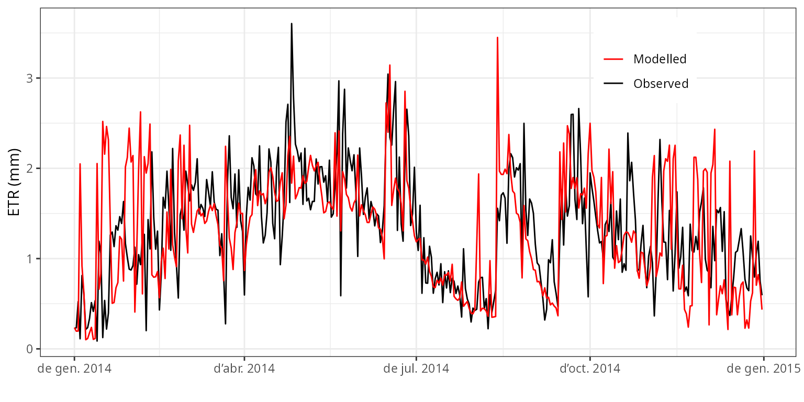
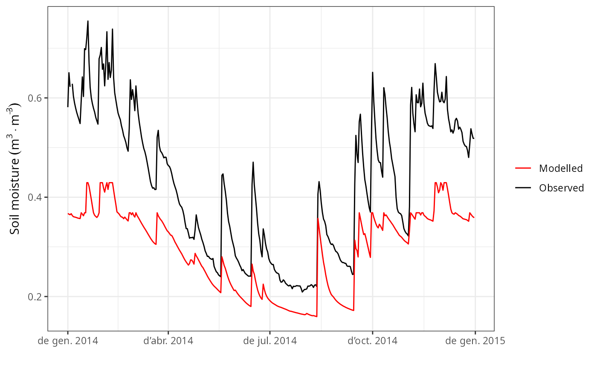
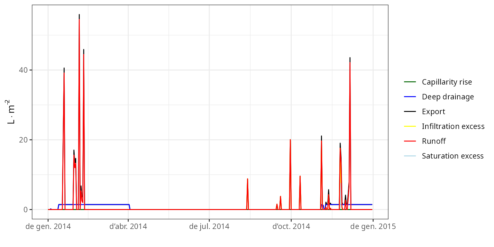

Soil and plant water balances at Font-Blanche
Miquel De Caceres (CREAF), Nicolas Martin-StPaul (INRA)
2025-12-10
Source:vignettes/workedexamples/FontBlanche.Rmd
FontBlanche.RmdIntroduction
About this vignette
This document describes how to run the water balance model on a
forest plot at Font-Blanche (France), using the R function
spwb() included in package medfate. The
document indicates how to prepare the model inputs, use the model
simulation function, evaluate the predictions against available
observations and inspect the outputs.
About the Font-Blanche research forest
The Font-Blanche research forest, located in southeastern France (43º14′27″ N 5°40′45″ E, 420 m elevation), is composed of a top strata of Pinus halepensis (Aleppo pine) reaching about 12 m, a lower strata of Quercus ilex (holm oak), reaching about 6 m, and an understorey strata dominated by Quercus coccifera but including other species such as Phillyrea latifolia. It is spatially heterogeneous: not all trees in each strata are contiguous, so trees from the lower stratas are partially exposed to direct light. The forest grows on rocky and shallow soils that have a low retention capacity and are of Jurassic limestone origin. The climate is Mediterranean, with a water stress period in summer, cold or mild winters and most precipitation occurring between September and May. The experimental site, which is dedicated to study forest carbon and water cycles, has an enclosed area of 80×80 m (Simioni et al. 2013) but our specific plot is a quadrat of dimensions 25x25 m.
Model inputs
Any forest water balance model needs information on
climate, vegetation and
soils of the forest stand to be simulated. Moreover,
since the soil water balance in medfate differentiates
between species, species-specific parameters are also
needed. Since FontBlanche is one of the sites used for evaluating the
model, and much of the data can be found in Moreno et al. (2021). We can
use a data list fb with all the necessary inputs:
fb <- medfatereports::load_list("FONBLA")## [1] "siteData" "treeData" "shrubData" "customParams"
## [5] "measuredData" "meteoData" "miscData" "soilData"
## [9] "terrainData" "remarks" "sp_params" "forest_object1"Soil
We require information on the physical attributes of soil in
Font-Blanche, namely soil depth, texture, bulk
density and rock fragment content. Soil information needs
to be entered as a data frame with soil layers in rows and
physical attributes in columns. The model accepts one to five soil
layers with arbitrary widths. Because soil properties vary strongly at
fine spatial scales, ideally soil physical attributes should be measured
on samples taken at the forest stand to be simulated. For those users
lacking such data, soil properties modelled at larger scales are
available via soilgrids.org (see function
soilgridsParams()). In our case soil physical attributes
are already defined in the data bundled for FontBlanche:
spar <- fb$soilData
print(spar)## widths clay sand om bd rfc
## 1 300 39 26 6 1.45 50
## 2 700 39 26 3 1.45 65
## 3 1000 39 26 1 1.45 90
## 4 2500 39 26 1 1.45 95The soil input for function spwb() is actually an object
of class soil that is created using a function with the
same name:
fb_soil <- soil(spar)The print() function for objects soil
provides a lot of information on soil physical properties and water
capacity:
print(fb_soil)## widths sand clay usda om nitrogen bd rfc macro Ksat VG_alpha
## 1 300 26 39 Clay loam 6 NA 1.45 50 0.07387 7232.425 44.14586
## 2 700 26 39 Clay loam 3 NA 1.45 65 0.07387 3481.917 61.34088
## 3 1000 26 39 Clay loam 1 NA 1.45 90 0.07387 1879.187 76.38182
## 4 2500 26 39 Clay loam 1 NA 1.45 95 0.07387 1879.187 76.38182
## VG_n VG_theta_res VG_theta_sat W Temp
## 1 1.254346 0.041 0.4388377 1 NA
## 2 1.273896 0.041 0.4388377 1 NA
## 3 1.287757 0.041 0.4388377 1 NA
## 4 1.287757 0.041 0.4388377 1 NAThe soil object is also used to store the moisture degree of each
soil layer. In particular, W contains the state variable
that represents moisture content - the proportion of moisture
relative to field capacity - which is by default
initialized to 1 for each layer:
fb_soil$W## [1] 1 1 1 1Species parameters
Simulation models in medfate require a data frame with
species parameter values. The package provides a default data set of
parameter values for a number of Mediterranean species occurring in
Spain (rows), resulting from bibliographic search, fit to empirical data
or expert-based guesses:
data("SpParamsMED")However, sometimes one may wish to override species defaults with custom values. In the case of FontBlanche there is a table of preferred parameters:
fb$customParams## Species VCleaf_P12 VCleaf_P50 VCleaf_P88 VCleaf_slope VCstem_P12
## 1 Phillyrea latifolia NA NA NA NA -1.971750
## 2 Pinus halepensis NA NA NA NA -3.707158
## 3 Quercus ilex NA NA NA NA -4.739642
## VCstem_P50 VCstem_P88 VCstem_slope VCroot_P12 VCroot_P50 VCroot_P88
## 1 -6.50 -11.028250 11 NA NA NA
## 2 -4.79 -5.872842 46 -1 -1.741565 -2.301482
## 3 -6.40 -8.060358 30 NA NA NA
## VCroot_slope VCleaf_kmax LeafEPS LeafPI0 LeafAF StemEPS StemPI0 StemAF Gswmin
## 1 NA 3.00 12.38 -2.13 0.5 12.38 -2.13 0.4 0.002
## 2 NA 4.00 5.31 -1.50 0.6 5.00 -1.65 0.4 0.001
## 3 NA 2.63 15.00 -2.50 0.4 15.00 -2.50 0.4 0.002
## Gswmax Gs_P50 Gs_slope Al2As
## 1 0.2200 -2.207094 89.41176 NA
## 2 0.2175 -1.871216 97.43590 631.000
## 3 0.2200 -2.114188 44.70588 1540.671We can use function modifySpParams() to replace the
values of parameters for the desired traits, leaving the rest
unaltered:
SpParamsFB <- modifySpParams(SpParamsMED, fb$customParams)
SpParamsFB## Name IFNcodes SpIndex AcceptedName
## 143 Phillyrea latifolia 8 142 Phillyrea latifolia
## 149 Pinus halepensis 24 148 Pinus halepensis
## 169 Quercus ilex 45/245 168 Quercus ilex
## Species Genus Family Order Group GrowthForm
## 143 Phillyrea latifolia Phillyrea Oleaceae Lamiales Angiosperm Tree
## 149 Pinus halepensis Pinus Pinaceae Pinales Gymnosperm Tree
## 169 Quercus ilex Quercus Fagaceae Fagales Angiosperm Tree/Shrub
## LifeForm LeafShape LeafSize PhenologyType DispersalType Hmed Hmax
## 143 Phanerophyte Broad Medium oneflush-evergreen vertebrate 150 900
## 149 Phanerophyte Needle Small oneflush-evergreen wind 850 1900
## 169 Phanerophyte Broad Medium oneflush-evergreen vertebrate 500 1300
## Dmax Z50 Z95 fHDmin fHDmax a_ash b_ash a_bsh b_bsh a_btsh
## 143 NA NA 2353 45 109 NA NA NA NA NA
## 149 NA NA 7500 80 160 NA NA NA NA NA
## 169 NA NA 5020 40 100 1.857486 1.885548 0.523883 0.7337293 0.7327147
## b_btsh cr BTsh a_fbt b_fbt c_fbt a_cr b_1cr b_2cr
## 143 NA NA NA NA NA NA NA NA NA
## 149 NA NA NA 0.07607828 1.462411 -0.02280106 NA NA NA
## 169 0.737577 NA NA 0.07848713 1.497670 -0.00309341 1.98539 -0.552 -0.01386
## b_3cr c_1cr c_2cr a_cw b_cw a_bt b_bt
## 143 NA NA NA NA NA NA NA
## 149 NA NA NA 0.6415296 0.7310 0.5535741 1.1848613
## 169 -0.000110736 -0.00685 -0.20101 0.5681897 0.7974 0.5622245 0.9626839
## LeafDuration t0gdd Sgdd Tbgdd Ssen Phsen Tbsen xsen ysen SLA
## 143 2.556345 NA NA NA NA NA NA NA NA 6.881886
## 149 2.536875 NA NA NA NA NA NA NA NA 5.140523
## 169 2.183837 54.5 240.7 4.34 10178 12.5 28.5 2 2 6.340000
## LeafDensity WoodDensity FineRootDensity conduit2sapwood r635 pDead
## 143 0.5327417 0.7050000 NA NA 1.917579 0.119768
## 149 0.2982842 0.6077016 NA 0.9236406 1.964226 0.000500
## 169 0.4893392 0.9008264 NA 0.6238125 1.805872 0.000260
## Al2As Ar2Al LeafWidth SRL RLD maxFMC minFMC LeafPI0 LeafEPS
## 143 1698.950 NA 1.2000000 NA NA 108.24724 56.53442 -2.13 12.38
## 149 631.000 NA 0.1384772 3172.572 NA 126.03063 86.22550 -1.50 5.31
## 169 1540.671 NA 1.7674359 4398.812 NA 93.15304 57.44192 -2.50 15.00
## LeafAF StemPI0 StemEPS StemAF SAV HeatContent LigninPercent LeafAngle
## 143 0.5 -2.13 12.38 0.4 9630 21400 NA NA
## 149 0.6 -1.65 5.00 0.4 6050 22150 24.52473 NA
## 169 0.4 -2.50 15.00 0.4 4050 19300 28.97492 NA
## LeafAngleSD ClumpingIndex gammaSWR alphaSWR kPAR g Tmax_LAI Tmax_LAIsq
## 143 NA NA NA NA NA NA NA NA
## 149 NA NA NA NA NA NA 0.1869849 -0.008372458
## 169 NA NA NA NA NA NA 0.1251027 -0.005601615
## Psi_Extract Exp_Extract WUE WUE_par WUE_co2 WUE_vpd Gswmin
## 143 -1.8969940 NA NA NA NA NA 0.002
## 149 -0.9218219 1.504542 8.525550 0.5239136 0.002586327 -0.2647169 0.001
## 169 -1.9726871 1.149052 8.968208 0.1412266 0.002413091 -0.5664879 0.002
## Gswmax Gsw_AC_slope Gs_Toptim Gs_Tsens Gs_P50 Gs_slope VCleaf_kmax
## 143 0.2200 NA NA NA -2.207094 89.41176 3.00
## 149 0.2175 NA NA NA -1.871216 97.43590 4.00
## 169 0.2200 NA NA NA -2.114188 44.70588 2.63
## VCleaf_P12 VCleaf_P50 VCleaf_P88 VCleaf_slope Kmax_stemxylem VCstem_P12
## 143 NA NA NA NA 0.4083769 -1.971750
## 149 -1.9793246 -2.303772 -2.547056 133.86620 0.1500000 -3.707158
## 169 -0.5559123 -1.964085 -4.525766 19.14428 0.4000000 -4.739642
## VCstem_P50 VCstem_P88 VCstem_slope Kmax_rootxylem VCroot_P12 VCroot_P50
## 143 -6.50 -11.028250 11 NA -3.1224807 -5.300000
## 149 -4.79 -5.872842 46 NA -1.0000000 -1.741565
## 169 -6.40 -8.060358 30 NA -0.4766469 -1.684034
## VCroot_P88 VCroot_slope Vmax298 Jmax298 Nleaf Nsapwood Nfineroot
## 143 -7.477519 17.45105 65.23250 146.2701 16.09170 2.78000 NA
## 149 -2.301482 103.96607 72.19617 124.1687 11.91507 1.26556 9.187476
## 169 -3.880455 22.32794 68.51600 118.7863 14.11983 5.66150 12.166747
## WoodC RERleaf RERsapwood RERfineroot CCleaf CCsapwood CCfineroot
## 143 NA NA NA NA 1.6300 NA NA
## 149 0.4979943 0.01210607 NA NA 1.5905 1.47 1.3
## 169 0.4740096 0.01757808 NA NA 1.4300 NA NA
## RGRleafmax RGRsapwoodmax RGRcambiummax RGRfinerootmax SRsapwood SRfineroot
## 143 NA NA 0.0006653797 NA NA NA
## 149 NA NA 0.0026280949 NA NA NA
## 169 NA NA NA NA NA NA
## RSSG MortalityBaselineRate SurvivalModelStep SurvivalB0 SurvivalB1
## 143 NA 0.001622378 NA NA NA
## 149 0.3725 0.005000000 10 7.311515 -0.6532989
## 169 0.9500 0.001000000 10 7.484348 -0.5420550
## SeedProductionHeight SeedProductionDiameter SeedMass SeedLongevity
## 143 NA NA NA NA
## 149 NA NA NA NA
## 169 NA 10.64702 NA NA
## DispersalDistance DispersalShape ProbRecr MinTempRecr MinMoistureRecr
## 143 NA NA 0.04459023 -2.570181 0.05070956
## 149 NA NA 0.02473379 1.083300 0.10154153
## 169 NA NA 0.03005748 -3.744526 0.09657161
## MinFPARRecr RecrAge RecrTreeDBH RecrTreeHeight RecrShrubHeight
## 143 0.4943654 NA NA 52.54367 NA
## 149 4.5625766 NA NA 56.93647 NA
## 169 0.1307250 NA NA 47.23629 NA
## RecrTreeDensity RecrShrubCover RespFire RespDist RespClip
## 143 NA NA 0.9 0.95 0.96
## 149 NA NA NA NA NA
## 169 NA NA 0.9 0.95 0.96
## IngrowthTreeDensity IngrowthTreeDBH
## 143 235.1347 NA
## 149 246.2793 NA
## 169 352.2668 NANote that the function returns a subset of rows for the species
mentioned in customParams. Not all parameters are needed
for the soil water balance model. The user can find parameter
definitions in the help page of this data set. However, to fully
understand the role of parameters in the model, the user should read the
details of model design and formulation (http://emf-creaf.github.io/medfate).
Vegetation
Models included in medfate were primarily designed to be
ran on forest inventory plots. In this kind of data,
the vegetation of a sampled area is described in terms of woody plants
(trees and shrubs) along with their size and species identity. Forest
plots in medfate are assumed to be in a format that follows
closely the Spanish forest inventory. Each forest plot is represented in
an object of class forest, a list that contains several
elements. Among them, the most important items are two data frames,
treeData (for trees) and shrubData for
shrubs:
fb_forest <- emptyforest()
fb_forest## $treeData
## [1] Species DBH Height N Z50 Z95
## <0 rows> (or 0-length row.names)
##
## $shrubData
## [1] Species Height Cover Z50 Z95
## <0 rows> (or 0-length row.names)
##
## attr(,"class")
## [1] "forest" "list"Trees are expected to be primarily described in terms of species, diameter (DBH) and height, whereas shrubs are described in terms of species, percent cover and mean height. In our case, we will for simplicity avoid shrubs and concentrate on the main three tree species in the Font-Blanche forest plot: Phillyrea latifolia (code 142), Pinus halepensis (Alepo pine, code 148), and Quercus ilex (holm oak; code 168). In order to run the model, one has to prepare a data table like this one, already prepared for Font-Blanche:
fb$treeData## Species DBH Height N Z50 Z95 LAI
## 1 Phillyrea latifolia 2.587859 323.0000 1248 390 1470 0.2581029
## 2 Pinus halepensis 26.759914 1195.7667 256 300 1200 1.0035486
## 3 Quercus ilex 6.220031 495.5532 3104 500 2287 1.4383485Trees have been grouped by species, so DBH and height values are
means (in cm), and N indicates the number of trees in each
category. Package medfate allows separating trees by size,
but for simplicity we do not distinguish here between tree sizes within
each species. Columns Z50 and Z95 indicate the
depths (in mm) corresponding to cumulative 50% and 95% of fine roots,
respectively.
In order to use this data, we need to replace the part corresponding to trees into the forest object that we created before:
fb_forest$treeData <- fb$treeData
fb_forest## $treeData
## Species DBH Height N Z50 Z95 LAI
## 1 Phillyrea latifolia 2.587859 323.0000 1248 390 1470 0.2581029
## 2 Pinus halepensis 26.759914 1195.7667 256 300 1200 1.0035486
## 3 Quercus ilex 6.220031 495.5532 3104 500 2287 1.4383485
##
## $shrubData
## [1] Species Height Cover Z50 Z95
## <0 rows> (or 0-length row.names)
##
## attr(,"class")
## [1] "forest" "list"Because the forest plot format is rather specific,
medfate also allows starting in an alternative way using
two data frames, one with aboveground information
(i.e. the leave area and size of plants) and the other with
belowground information (i.e. root distribution). The
aboveground data frame does not distinguish between trees and shrubs. It
includes, for each plant cohort to be considered in rows, its
species identity, height, leaf area index
(LAI) and crown ratio. While users can build their input data
themselves, we use internal function forest2aboveground()
on the object fb_forest to show how should the data look
like:
fb_above <- forest2aboveground(fb_forest, SpParamsFB)
fb_above## SP N DBH Cover H CR LAI_live LAI_expanded
## T1_142 142 1248 2.587859 NA 323.0000 0.5510653 0.2581029 0.2581029
## T2_148 148 256 26.759914 NA 1195.7667 0.6126601 1.0035486 1.0035486
## T3_168 168 3104 6.220031 NA 495.5532 0.5531152 1.4383485 1.4383485
## LAI_dead LAI_nocomp Age ObsID
## T1_142 0 0.2581029 NA <NA>
## T2_148 0 1.0035486 NA <NA>
## T3_168 0 1.4383485 NA <NA>Note that the call to forest2aboveground() included
species parameters, because species-specific parameter values are needed
to calculate leaf area from tree diameters or shrub cover using
allometric relationships. Columns N, DBH and
Cover are required for simulating growth, but not for soil
water balance, which only requires columns SP,
H (in cm), CR (i.e. the crown ratio),
LAI_live, LAI_expanded and
LAI_dead. Here plant cohorts are given unique codes that
tell us whether they correspond to trees or shrubs. In practice, the
user only needs to worry to calculate the values for
LAI_live. LAI_live and
LAI_expanded can contain the same LAI values, and
LAI_dead is normally zero.
We see that at Font-Blanche holm oaks (code 68) represent most of the
total leaf area. On the other hand, pines are taller than oaks.
medfate assumes that leaf distribution follows a truncated
normal curve between the crown base height and the total height. This
can be easily inspected using function
vprofile_leafAreaDensity():
vprofile_leafAreaDensity(fb_forest, SpParamsFB, byCohorts = T, bySpecies = T)
Regarding belowground information, the usuer should
supply a matrix describing for each plant cohort, the proportion of fine
roots in each soil layer. As before, we use internal function
forest2belowground() on the object fb_forest
to show how should the data look like:
fb_below <- forest2belowground(fb_forest, fb_soil, SpParamsFB)
fb_below## 1 2 3 4
## T1_142 0.3602157 0.5332967 0.08477533 0.02171222
## T2_148 0.5016024 0.4291685 0.05479894 0.01443019
## T3_168 0.2752236 0.5286425 0.14537757 0.05075634In our case, these proportions were implicitly specified in
parameters Z50 and Z95. In fact, these values
describe a continuous distribution of fine roots along depth, which can
be displayed using function
vprofile_rootDistribution():
vprofile_rootDistribution(fb_forest, SpParamsFB, bySpecies = T)
Note that in Font-Blanche we set that the root system of Aleppo pines (Pinus halepensis) would be more superficial than that of the other two species. Moreover, holm oak trees are the ones who extend their roots down to deepest soil layers.
Meteorology
Water balance simulations of function spwb() require
daily weather inputs. The weather variables that are
required depend on the complexity of the soil water balance model we are
using. In the simplest case, only mean temperature,
precipitation and potential evapo-transpiration
(PET) is required, but the more complex simulation model also
requires radiation, wind speed, min/max temparature and relative
humitidy. Here we already have a data frame with the daily meteorology
measured at Font-Blanche for year 2014:
fb_meteo <- fb$meteoData
head(fb_meteo)## dates MeanTemperature MinTemperature MaxTemperature MeanRelativeHumidity
## 1 2014-01-01 7.661856 5.988889 8.960000 87.78224
## 2 2014-01-02 9.525431 7.958333 11.550000 96.40669
## 3 2014-01-03 9.482417 8.176111 11.762220 93.05705
## 4 2014-01-04 10.016813 6.313000 11.010000 96.31667
## 5 2014-01-05 6.619919 4.766000 9.060555 57.77938
## 6 2014-01-06 8.923008 6.793889 12.329440 64.40477
## MinRelativeHumidity MaxRelativeHumidity WindSpeed Precipitation Radiation
## 1 80.37265 98.48404 2.317495 0.000000 1.5050178
## 2 84.22588 100.00000 2.407691 0.000000 2.6173102
## 3 79.93501 100.00000 1.950114 0.000000 3.9089762
## 4 90.14023 100.00000 3.596797 2.590674 0.4753025
## 5 48.92043 65.71329 7.310334 0.000000 8.6224570
## 6 51.31975 74.46718 2.301697 0.000000 6.7835715Simulation models in medfate have been designed to work
along with data generated from package meteoland (De
Cáceres et al. 2018), which specifies conventions for variable names and
units. The user is strongly recommended to resort to this package to
obtain suitable weather input for soil water balance simulations (see http://emf-creaf.github.io/meteoland).
Simulation control
Apart from data inputs, the behavior of simulation models can be
controlled using a set of global parameters. The
default global parameter values are obtained using function
defaultControl():
fb_control <- defaultControl()
fb_control$transpirationMode <- "Sperry"
fb_control$subdailyResults <- TRUE
fb_control$stemCavitationRecovery <- "rate"
fb_control$leafCavitationRecovery <- "total"
fb_control$fracRootResistance <- 0.4Where the following changes are set to control parameters:
- Transpiration is set
transpirationMode = "Sperry", which implies a greater complexity of plant hydraulics and energy balance calculations. - Soil water retention curves are calculated using Van Genuchten’s equations.
- Subdaily results generated by the model are kept.
- Coarse root resistance is assumed to be 40% of total plant resistance
Water balance input object
A last step is needed before calling simulation functions. It
consists in the compilation of all aboveground and belowground
parameters and the specification of additional parameter values for each
plant cohort, such as their light extinction coefficient or their
response to drought. If one has a forest object, the
spwbInput object can be generated in directly from it,
avoiding the need to explicitly build fb_above and
fb_below data frames:
fb_x <- spwbInput(fb_forest, fb_soil, SpParamsFB, fb_control)Different species parameter variables will be drawn from
SpParamsMED depending on the value of
transpirationMode. For the simple water balance model,
relatively few parameters are needed. All the input information for
forest data and species parameter values can be inspected by printing
the input object.
Finally, note that one can play with plant-specific parameters for
soil water balance (instead of using species-level values) by using
function modifyCohortParams().
Running the model
Function spwb() requires two main objects as input:
- A
spwbInputobject with forest and soil parameters (fb_xin our case). - A data frame with daily meteorology for the study period
(
fb_meteoin our case).
Now we are ready to call function spwb():
fb_SWB <- spwb(fb_x, fb_meteo, elevation = 420, latitude = 43.24083)## Package 'meteoland' [ver. 2.2.4]## Initial plant water content (mm): 31.8864
## Initial soil water content (mm): 213.886
## Initial snowpack content (mm): 0
## Performing daily simulations
##
## [Year 2014]:............
##
## Final plant water content (mm): 31.8309
## Final soil water content (mm): 235.07
## Final snowpack content (mm): 0
## Change in plant water content (mm): -0.0554502
## Plant water balance result (mm): -9.83278e-16
## Change in soil water content (mm): 21.1846
## Soil water balance result (mm): 21.1846
## Change in snowpack water content (mm): 0
## Snowpack water balance result (mm): 0
## Water balance components:
## Precipitation (mm) 1066 Rain (mm) 1066 Snow (mm) 0
## Interception (mm) 141 Net rainfall (mm) 925
## Infiltration (mm) 833 Infiltration excess (mm) 92 Saturation excess (mm) 272 Capillarity rise (mm) 0
## Soil evaporation (mm) 21 Herbaceous transpiration (mm) 0 Woody plant transpiration (mm) 323
## Plant extraction from soil (mm) 323 Plant water balance (mm) -0 Hydraulic redistribution (mm) 36
## Runoff (mm) 364 Deep drainage (mm) 195Console output provides the water balance totals for the period
considered, which may span several years. The output of function
spwb() is an object of class with the same name, actually a
list:
class(fb_SWB)## [1] "spwb" "list"If we inspect its elements, we realize that there are several components:
names(fb_SWB)## [1] "latitude" "topography" "weather" "spwbInput"
## [5] "spwbOutput" "WaterBalance" "EnergyBalance" "Temperature"
## [9] "Soil" "Snow" "Stand" "Plants"
## [13] "SunlitLeaves" "ShadeLeaves" "subdaily"For example, WaterBalance contains water balance
components in form of a data frame with days in rows:
head(fb_SWB$WaterBalance)## PET Precipitation Rain Snow NetRain Snowmelt
## 2014-01-01 0.6209989 0.000000 0.000000 0 0.0000000 0
## 2014-01-02 0.5671238 0.000000 0.000000 0 0.0000000 0
## 2014-01-03 0.5418115 0.000000 0.000000 0 0.0000000 0
## 2014-01-04 0.6072565 2.590674 2.590674 0 0.7213133 0
## 2014-01-05 2.0447148 0.000000 0.000000 0 0.0000000 0
## 2014-01-06 0.9330456 0.000000 0.000000 0 0.0000000 0
## Infiltration InfiltrationExcess SaturationExcess Runoff DeepDrainage
## 2014-01-01 0.0000000 0 0 0 0.0000000
## 2014-01-02 0.0000000 0 0 0 0.0000000
## 2014-01-03 0.0000000 0 0 0 0.0000000
## 2014-01-04 0.7213133 0 0 0 0.1891113
## 2014-01-05 0.0000000 0 0 0 0.0000000
## 2014-01-06 0.0000000 0 0 0 0.0000000
## CapillarityRise Evapotranspiration Interception SoilEvaporation
## 2014-01-01 0 0.2369034 0.00000 0.2145403
## 2014-01-02 0 0.1959278 0.00000 0.1959278
## 2014-01-03 0 0.1971447 0.00000 0.1871830
## 2014-01-04 0 2.0494022 1.86936 0.1800420
## 2014-01-05 0 0.9200973 0.00000 0.2941821
## 2014-01-06 0 0.6256207 0.00000 0.1367511
## HerbTranspiration PlantExtraction Transpiration
## 2014-01-01 0 2.236303e-02 0.02236303
## 2014-01-02 0 -1.409463e-18 0.00000000
## 2014-01-03 0 9.961750e-03 0.00996175
## 2014-01-04 0 9.486769e-19 0.00000000
## 2014-01-05 0 6.259152e-01 0.62591524
## 2014-01-06 0 4.888697e-01 0.48886969
## HydraulicRedistribution
## 2014-01-01 0.000000000
## 2014-01-02 0.002400632
## 2014-01-03 0.003379188
## 2014-01-04 0.004276351
## 2014-01-05 0.000000000
## 2014-01-06 0.001303872Comparing results with observations
Before examining the results of the model, it is important to compare its predictions against observed data, if available. The following observations are available from the experimental forest plot for year 2014:
- Stand total evapotranspiration estimated using an Eddy-covariance flux tower.
- Soil moisture content of the first 0-30 cm layer.
- Cohort transpiration estimates derived from sapflow measurements for Q. ilex and P. halepensis.
- Pre-dawn and midday leaf water potentials for Q. ilex and P. halepensis.
We first load the measured data into the workspace and filter for the dates used in the simulation:
fb_observed <- fb$measuredData
fb_observed <- fb_observed[fb_observed$dates %in% fb_meteo$dates,]
row.names(fb_observed) <- fb_observed$dates
head(fb_observed)## dates SWC SWC.err ETR E_T2_148 E_T2_148_err
## 2014-01-01 2014-01-01 0.5813407 NA 0.2259528 NA NA
## 2014-01-02 2014-01-02 0.6507478 NA 0.2337668 NA NA
## 2014-01-03 2014-01-03 0.6224243 NA 0.5229000 NA NA
## 2014-01-04 2014-01-04 NA NA 0.1117191 NA NA
## 2014-01-05 2014-01-05 0.6285134 NA 0.8132403 NA NA
## 2014-01-06 2014-01-06 0.6035415 NA 0.6012234 NA NA
## E_T3_168 E_T3_168_err PD_T2_148 PD_T2_148_err PD_T3_168
## 2014-01-01 NA NA NA NA NA
## 2014-01-02 NA NA NA NA NA
## 2014-01-03 NA NA NA NA NA
## 2014-01-04 NA NA NA NA NA
## 2014-01-05 NA NA NA NA NA
## 2014-01-06 NA NA NA NA NA
## PD_T3_168_err MD_T2_148 MD_T2_148_err MD_T3_168 MD_T3_168_err
## 2014-01-01 NA NA NA NA NA
## 2014-01-02 NA NA NA NA NA
## 2014-01-03 NA NA NA NA NA
## 2014-01-04 NA NA NA NA NA
## 2014-01-05 NA NA NA NA NA
## 2014-01-06 NA NA NA NA NAStand evapotranspiration
Package medfate contains several functions to assist the
evaluation of model results. We can first compare the observed vs
modelled total evapotranspiration. We can plot the two time series:
evaluation_plot(fb_SWB, fb_observed, type = "ETR", plotType="dynamics")+
theme(legend.position = c(0.8,0.85))
It is easy to see that in rainy days the predicted evapotranspiration is much higher than that of the observed data. We repeat the comparison but excluding the intercepted water from modeled results:
evaluation_plot(fb_SWB, fb_observed, type = "SE+TR", plotType="dynamics")+
theme(legend.position = c(0.8,0.85))
The relationship can be shown in a scatter plot:
evaluation_plot(fb_SWB, fb_observed, type = "SE+TR", plotType="scatter") Where we see a reasonably good relationship, but the model tends to
underestimate total evapotranspiration during seasons with low
evaporative demand. Function
Where we see a reasonably good relationship, but the model tends to
underestimate total evapotranspiration during seasons with low
evaporative demand. Function evaluation_stats() allows us
to generate evaluation statistics:
evaluation_stats(fb_SWB, fb_observed, type = "SE+TR")## n Bias Bias.rel MAE MAE.rel
## 365.000000000 -0.389036614 -29.198664329 0.470818543 35.336706323
## r NSE NSE.abs
## 0.691315875 -0.009887544 0.054424469Soil moisture
We can compare observed vs modelled soil moisture content in a similar way as we did for total evapotranspiration:
evaluation_plot(fb_SWB, fb_observed, type = "SWC", plotType="dynamics")
As before, we can generate a scatter plot:
evaluation_plot(fb_SWB, fb_observed, type = "SWC", plotType="scatter")
or examine evaluation statistics:
evaluation_stats(fb_SWB, fb_observed, type = "SWC")## n Bias Bias.rel MAE MAE.rel r
## 364.00000000 -0.13283708 -30.96872370 0.13283708 30.96872370 0.94976486
## NSE NSE.abs
## -0.09616646 -0.04072213Plant transpiration
The following plots display the observed and predicted transpiration dynamics for Pinus halepensis and Quercus ilex:
g1<-evaluation_plot(fb_SWB, fb_observed,
cohort = "T2_148",
type="E", plotType = "dynamics")+
theme(legend.position = c(0.85,0.83))
g2<-evaluation_plot(fb_SWB, fb_observed,
cohort = "T3_168",
type="E", plotType = "dynamics")+
theme(legend.position = c(0.85,0.83))
plot_grid(g1, g2, ncol=1)
In general, the agreement is quite good, but the model seems to overestimate the transpiration of P. halepensis in early summer and after the first drought period. The transpiration of Q. ilex seems also overestimated in spring and autumn. We can also inspect the evaluation statistics for both species using:
evaluation_stats(fb_SWB, fb_observed, cohort = "T2_148", type="E")## n Bias Bias.rel MAE MAE.rel r
## 300.0000000 0.3121143 151.7537015 0.3282208 159.5848671 0.8564806
## NSE NSE.abs
## -11.6385648 -2.3168403
evaluation_stats(fb_SWB, fb_observed, cohort = "T3_168", type="E")## n Bias Bias.rel MAE MAE.rel
## 309.000000000 -0.006040064 -2.086676013 0.067209664 23.219092424
## r NSE NSE.abs
## 0.887009157 0.762024744 0.542114689Leaf water potentials
Finally, we can compare observed with predicted water potentials. In this case measurements are available for three dates, but they include the standard deviation of several measurements.
g1<-evaluation_plot(fb_SWB, fb_observed,
cohort = "T2_148",
type="WP", plotType = "dynamics")+
theme(legend.position = c(0.85,0.23))
g2<-evaluation_plot(fb_SWB, fb_observed,
cohort = "T3_168",
type="WP", plotType = "dynamics")+
theme(legend.position = c(0.85,0.23))
plot_grid(g1, g2, ncol=1)
The model seems to underestimate water potentials (i.e. it predicts more negative values than those observed) during the drought season.
Drawing plots
Package medfate provides a simple plot
function for objects of class spwb. Here we will use this
function to display the seasonal variation predicted by the model, as
well as the variation at higher temporal resolution within four
different selected 3-day periods that we define here:
d1 = seq(as.Date("2014-03-01"), as.Date("2014-03-03"), by="day")
d2 = seq(as.Date("2014-06-01"), as.Date("2014-06-03"), by="day")
d3 = seq(as.Date("2014-08-01"), as.Date("2014-08-03"), by="day")
d4 = seq(as.Date("2014-10-01"), as.Date("2014-10-03"), by="day")Meteorological input and input/output water flows
Function plot() can be used to show the meteorological
input:
plot(fb_SWB, type = "PET_Precipitation") It is apparent the climatic drought period between april and august
2014. This should have an impact on soil moisture and plant stress.
It is apparent the climatic drought period between april and august
2014. This should have an impact on soil moisture and plant stress.
If we are interested in forest hydrology, we can plot the amount of water that the model predicts to leave the forest via surface runoff or drainage to lower water compartments.
plot(fb_SWB, type = "Export") As expected, water exported from the forest plot was only relevant for the autumn and winter periods. Note also that the model predicts some runoff during convective storms during autumn, whereas winter events occur when the soil is already full, so that most exported water is assumed to be lost via deep drainage. One can also display the evapotranspiration flows, which we do in the following plot that also combines the two previous:
g1<-plot(fb_SWB)+scale_x_date(date_breaks = "1 month", date_labels = "%m")+theme(legend.position = "none")
g2<-plot(fb_SWB, "Evapotranspiration")+scale_x_date(date_breaks = "1 month", date_labels = "%m")+theme(legend.position = c(0.13,0.73))
g3<-plot(fb_SWB, "Export")+scale_x_date(date_breaks = "1 month", date_labels = "%m")+theme(legend.position = c(0.35,0.60))
plot_grid(g1,g2, g3, ncol=1, rel_heights = c(0.4,1,0.6))
Soil moisture dynamics and hydraulic redistribution
It is also useful to plot the dynamics of soil state variables by layer, such as the percentage of moisture in relation to field capacity:
plot(fb_SWB, type="SoilTheta") Note that the model predicts soil drought to occur earlier in the season
for the first three layers (0-200 cm) whereas the bottom layer dries out
much more slowly. At this point is important to mention that the water
balance model incorporates. We can also display the dynamics of the
corresponding soil layer water potentials:
Note that the model predicts soil drought to occur earlier in the season
for the first three layers (0-200 cm) whereas the bottom layer dries out
much more slowly. At this point is important to mention that the water
balance model incorporates. We can also display the dynamics of the
corresponding soil layer water potentials:
plot(fb_SWB, type="SoilPsi") or draw a composite plot including absolute soil water volume:
or draw a composite plot including absolute soil water volume:
g1<-plot(fb_SWB)+scale_x_date(date_breaks = "1 month", date_labels = "%m")+theme(legend.position = "none")
g2<-plot(fb_SWB, "SoilVol")+scale_x_date(date_breaks = "1 month", date_labels = "%m")+theme(legend.position = c(0.08,0.65))
g3<-plot(fb_SWB, "SoilPsi")+scale_x_date(date_breaks = "1 month", date_labels = "%m")+theme(legend.position = c(0.08,0.5))
plot_grid(g1, g2, g3, rel_heights = c(0.4,0.8,0.8), ncol=1)
Root water uptake and hydraulic redistribution
The following composite plot shows the daily root water uptake (or release) from different soil layers, and the daily amount of water entering soil layers due to hydraulic redistribution:
g1<-plot(fb_SWB, "SoilPsi")+scale_x_date(date_breaks = "1 month", date_labels = "%m")+theme(legend.position = "none")+ylab("Soil wp (MPa)")
g2<-plot(fb_SWB, "PlantExtraction")+scale_x_date(date_breaks = "1 month", date_labels = "%m")+theme(legend.position = c(0.08,0.68))
g3<-plot(fb_SWB, "HydraulicRedistribution")+scale_x_date(date_breaks = "1 month", date_labels = "%m")+theme(legend.position = c(0.08,0.5))
plot_grid(g1, g2, g3, rel_heights = c(0.4,0.8,0.8), ncol=1)
If we create a composite plot including subdaily water uptake/release patterns, we can further understand the redistribution flows created by the model during different periods:
g0<-plot(fb_SWB, "PlantExtraction")+scale_x_date(date_breaks = "1 month", date_labels = "%m")+theme(legend.position = c(0.08,0.68))
g1<-plot(fb_SWB, "PlantExtraction", subdaily = T, dates = d1)+scale_x_datetime(date_breaks = "1 day", date_labels = "%m/%d")+theme(legend.position = "none")+ylim(c(-0.05,0.13))
g2<-plot(fb_SWB, "PlantExtraction", subdaily = T, dates = d2)+scale_x_datetime(date_breaks = "1 day", date_labels = "%m/%d")+theme(legend.position = "none")+ylab("")+ylim(c(-0.05,0.13))
g3<-plot(fb_SWB, "PlantExtraction", subdaily = T, dates = d3)+scale_x_datetime(date_breaks = "1 day", date_labels = "%m/%d")+theme(legend.position = "none")+ylab("")+ylim(c(-0.05,0.13))
g4<-plot(fb_SWB, "PlantExtraction", subdaily = T, dates = d4)+scale_x_datetime(date_breaks = "1 day", date_labels = "%m/%d")+theme(legend.position = "none")+ylab("")+ylim(c(-0.05,0.13))
plot_grid(g0,plot_grid(g1, g2, g3, g4, ncol=4),ncol=1)
Plant transpiration
We can use function plot() to display the seasonal
dynamics of cohort-level variables, such as plant transpiration per leaf
area:
 Where we can observe that some species transpire more than others due to
their vertical position within the canopy.
Where we can observe that some species transpire more than others due to
their vertical position within the canopy.
g1<-plot(fb_SWB)+scale_x_date(date_breaks = "1 month", date_labels = "%m")+theme(legend.position = "none")
g2<-plot(fb_SWB, "TranspirationPerLeaf", bySpecies = T)+scale_x_date(date_breaks = "1 month", date_labels = "%m")+theme(legend.position = c(0.1,0.75))
g21<-plot(fb_SWB, "LeafTranspiration", subdaily = T, dates = d1)+scale_x_datetime(date_breaks = "1 day", date_labels = "%m/%d")+theme(legend.position = "none")+ylim(c(0,0.32))
g22<-plot(fb_SWB, "LeafTranspiration", subdaily = T, dates = d2)+scale_x_datetime(date_breaks = "1 day", date_labels = "%m/%d")+theme(legend.position = "none")+ylab("")+ylim(c(0,0.32))
g23<-plot(fb_SWB, "LeafTranspiration", subdaily = T, dates = d3)+scale_x_datetime(date_breaks = "1 day", date_labels = "%m/%d")+theme(legend.position = "none")+ylab("")+ylim(c(0,0.32))
g24<-plot(fb_SWB, "LeafTranspiration", subdaily = T, dates = d4)+scale_x_datetime(date_breaks = "1 day", date_labels = "%m/%d")+theme(legend.position = "none")+ylab("")+ylim(c(0,0.32))
plot_grid(g1, g2,
plot_grid(g21,g22,g23,g24, ncol=4),
ncol=1, rel_heights = c(0.4,0.8,0.8))
Plant stress
In the model, reduction of (whole-plant) plant transpiration is what used to define drought stress, which depends on the species identity:
plot(fb_SWB, type="PlantStress", bySpecies = T)
To examine the impact of drought on plants, one can inspect the whole-plant conductance (from which the stress index is derived) or the stem percent loss of conductance derived from embolism, as we do in the following composite plot:
g1<-plot(fb_SWB)+scale_x_date(date_breaks = "1 month", date_labels = "%m")+theme(legend.position = "none")
g2<-plot(fb_SWB, "SoilPlantConductance", bySpecies = T)+scale_x_date(date_breaks = "1 month", date_labels = "%m")+
ylab(expression(paste("Soil-plant conductance ",(mmol%.%m^{-2}%.%s^{-1}))))+
theme(legend.position = "none")
g3<-plot(fb_SWB, "StemPLC", bySpecies = T)+scale_x_date(date_breaks = "1 month", date_labels = "%m")+theme(legend.position = c(0.2,0.75))
plot_grid(g1, g2,g3,
ncol=1, rel_heights = c(0.4,0.8,0.8))
Leaf water potentials
g1<-plot(fb_SWB)+scale_x_date(date_breaks = "1 month", date_labels = "%m")+theme(legend.position = "none")
g2<-plot(fb_SWB, "LeafPsiRange", bySpecies = T)+scale_x_date(date_breaks = "1 month", date_labels = "%m")+theme(legend.position = c(0.1,0.25)) + ylab("Leaf water potential (MPa)")
g21<-plot(fb_SWB, "LeafPsi", subdaily = T, dates = d1)+scale_x_datetime(date_breaks = "1 day", date_labels = "%m/%d")+theme(legend.position = "none")+ylim(c(-7,0))
g22<-plot(fb_SWB, "LeafPsi", subdaily = T, dates = d2)+scale_x_datetime(date_breaks = "1 day", date_labels = "%m/%d")+theme(legend.position = "none")+ylab("")+ylim(c(-7,0))
g23<-plot(fb_SWB, "LeafPsi", subdaily = T, dates = d3)+scale_x_datetime(date_breaks = "1 day", date_labels = "%m/%d")+theme(legend.position = "none")+ylab("")+ylim(c(-7,0))
g24<-plot(fb_SWB, "LeafPsi", subdaily = T, dates = d4)+scale_x_datetime(date_breaks = "1 day", date_labels = "%m/%d")+theme(legend.position = "none")+ylab("")+ylim(c(-7,0))
plot_grid(g1, g2,
plot_grid(g21,g22,g23,g24, ncol=4),
ncol=1, rel_heights = c(0.4,0.8,0.8))
Stomatal conductance
g1<-plot(fb_SWB)+scale_x_date(date_breaks = "1 month", date_labels = "%m")+theme(legend.position = "none")
g2<-plot(fb_SWB, "GSWMax_SL", bySpecies = T)+scale_x_date(date_breaks = "1 month", date_labels = "%m")+theme(legend.position = c(0.5,0.74))+ylab("Sunlit leaf stomatal conductance")+ylim(c(0,0.3))
g21<-plot(fb_SWB, "LeafStomatalConductance", subdaily = T, dates = d1)+scale_x_datetime(date_breaks = "1 day", date_labels = "%m/%d")+theme(legend.position = "none")+ylim(c(0,0.2))
g22<-plot(fb_SWB, "LeafStomatalConductance", subdaily = T, dates = d2)+scale_x_datetime(date_breaks = "1 day", date_labels = "%m/%d")+theme(legend.position = "none")+ylab("")+ylim(c(0,0.2))
g23<-plot(fb_SWB, "LeafStomatalConductance", subdaily = T, dates = d3)+scale_x_datetime(date_breaks = "1 day", date_labels = "%m/%d")+theme(legend.position = "none")+ylab("")+ylim(c(0,0.2))
g24<-plot(fb_SWB, "LeafStomatalConductance", subdaily = T, dates = d4)+scale_x_datetime(date_breaks = "1 day", date_labels = "%m/%d")+theme(legend.position = "none")+ylab("")+ylim(c(0,0.2))
plot_grid(g1, g2,
plot_grid(g21,g22,g23,g24, ncol=4),
ncol=1, rel_heights = c(0.4,0.8,0.8))
Generating output summaries
While the water balance model operates at daily and sub-daily steps,
users will normally be interested in outputs at larger time scales. The
package provides a summary for objects of class
spwb. This function can be used to summarize the model’s
output at different temporal steps (i.e. weekly, monthly or annual). For
example, to obtain the average soil moisture and water potentials by
months one can use:
summary(fb_SWB, freq="months",FUN=sum, output="WaterBalance")## PET Precipitation Rain Snow NetRain Snowmelt
## 2014-01-01 27.03414 205.04814 205.04814 0 182.5767907 0
## 2014-02-01 37.11592 181.09641 181.09641 0 155.2573002 0
## 2014-03-01 80.49737 44.61248 44.61248 0 39.8917051 0
## 2014-04-01 109.24874 15.00000 15.00000 0 7.2713589 0
## 2014-05-01 147.99639 21.60000 21.60000 0 16.3281633 0
## 2014-06-01 167.27898 33.60000 33.60000 0 25.8839490 0
## 2014-07-01 183.99299 0.60000 0.60000 0 0.1428946 0
## 2014-08-01 159.66330 60.40000 60.40000 0 52.8025568 0
## 2014-09-01 103.42793 137.60000 137.60000 0 125.8957242 0
## 2014-10-01 63.53896 50.60000 50.60000 0 41.9066889 0
## 2014-11-01 30.12083 222.60000 222.60000 0 198.0975096 0
## 2014-12-01 26.01617 93.00000 93.00000 0 78.7534201 0
## Infiltration InfiltrationExcess SaturationExcess Runoff
## 2014-01-01 182.5767907 0.000000 87.131292 87.131292
## 2014-02-01 155.2573002 0.000000 122.052322 122.052322
## 2014-03-01 39.8917051 0.000000 0.000000 0.000000
## 2014-04-01 7.2713589 0.000000 0.000000 0.000000
## 2014-05-01 16.3281633 0.000000 0.000000 0.000000
## 2014-06-01 25.8839490 0.000000 0.000000 0.000000
## 2014-07-01 0.1428946 0.000000 0.000000 0.000000
## 2014-08-01 43.9831062 8.819451 0.000000 8.819451
## 2014-09-01 100.5141047 25.381619 0.000000 25.381619
## 2014-10-01 32.2966990 9.609990 0.000000 9.609990
## 2014-11-01 149.6168145 48.480695 8.236761 56.717456
## 2014-12-01 78.7534201 0.000000 54.503273 54.503273
## DeepDrainage CapillarityRise Evapotranspiration Interception
## 2014-01-01 27.43229 0 33.72460 22.4713498
## 2014-02-01 40.14785 0 39.97770 25.8391081
## 2014-03-01 44.44940 0 44.31867 4.7207713
## 2014-04-01 2.97102 0 51.42681 7.7286411
## 2014-05-01 0.00000 0 55.90230 5.2718367
## 2014-06-01 0.00000 0 50.52022 7.7160510
## 2014-07-01 0.00000 0 23.42626 0.4571054
## 2014-08-01 0.00000 0 39.94402 7.5974432
## 2014-09-01 0.00000 0 38.85580 11.7042748
## 2014-10-01 0.00000 0 40.94474 8.6933111
## 2014-11-01 35.63848 0 38.86009 24.5024904
## 2014-12-01 44.44940 0 27.36741 14.2465799
## SoilEvaporation HerbTranspiration PlantExtraction Transpiration
## 2014-01-01 4.1371318 0 7.116121 7.116121
## 2014-02-01 2.8861399 0 11.252448 11.252448
## 2014-03-01 2.8231565 0 36.774743 36.774743
## 2014-04-01 0.3572535 0 43.340913 43.340913
## 2014-05-01 0.2003021 0 50.430160 50.430160
## 2014-06-01 0.1570277 0 42.647138 42.647138
## 2014-07-01 0.1053905 0 22.863761 22.863761
## 2014-08-01 0.2145482 0 32.132033 32.132033
## 2014-09-01 0.8479270 0 26.303598 26.303598
## 2014-10-01 2.7214885 0 29.529940 29.529940
## 2014-11-01 3.8341497 0 10.523454 10.523454
## 2014-12-01 3.1304478 0 9.990378 9.990378
## HydraulicRedistribution
## 2014-01-01 0.3413862
## 2014-02-01 0.3351108
## 2014-03-01 0.7914425
## 2014-04-01 1.5215724
## 2014-05-01 3.8436734
## 2014-06-01 4.9136961
## 2014-07-01 2.0482198
## 2014-08-01 7.9501235
## 2014-09-01 9.0616152
## 2014-10-01 4.5184551
## 2014-11-01 0.5537272
## 2014-12-01 0.5609182Parameter output is used to indicate the element of the
spwb object for which we desire summaries. Similarly, it is
possible to calculate the average stress of the three tree species by
months:
summary(fb_SWB, freq="months",FUN=mean, output="PlantStress", bySpecies = TRUE)## Phillyrea latifolia Pinus halepensis Quercus ilex
## 2014-01-01 0.001135310 0.0001555995 0.007214914
## 2014-02-01 0.002700621 0.0002211655 0.013129655
## 2014-03-01 0.009591910 0.0017087985 0.037889474
## 2014-04-01 0.019287437 0.0061613082 0.066432415
## 2014-05-01 0.066296190 0.0784977110 0.148168137
## 2014-06-01 0.239111429 0.3777808093 0.300404204
## 2014-07-01 0.554959953 0.7392473424 0.516900103
## 2014-08-01 0.433248835 0.5375966514 0.435511569
## 2014-09-01 0.277632275 0.3754657422 0.282362375
## 2014-10-01 0.027594879 0.0085234976 0.036201343
## 2014-11-01 0.016473943 0.0029963609 0.011201982
## 2014-12-01 0.010979466 0.0002299063 0.007583226In this case, the summary function aggregates the output
by species using LAI values as weights.
Bibliography
De Caceres M, Martin-StPaul N, Turco M, et al (2018) Estimating daily meteorological data and downscaling climate models over landscapes. Environ Model Softw 108:186–196. https://doi.org/10.1016/j.envsoft.2018.08.003
De Caceres M, Martinez-Vilalta J, Coll L, et al (2015) Coupling a water balance model with forest inventory data to predict drought stress: the role of forest structural changes vs. climate changes. Agric For Meteorol 213:77–90. https://doi.org/10.1016/j.agrformet.2015.06.012
Simioni G, Durand-gillmann M, Huc R, et al (2013) Asymmetric competition increases leaf inclination effect on light absorption in mixed canopies. Ann For Sci 70:123–131. https://doi.org/10.1007/s13595-012-0246-8
Moreno, M., Simioni, G., Cailleret, M., Ruffault, J., Badel, E., Carrière, S., Davi, H., Gavinet, J., Huc, R., Limousin, J.-M., Marloie, O., Martin, L., Rodríguez-Calcerrada, J., Vennetier, M., Martin-StPaul, N., 2021. Consistently lower sap velocity and growth over nine years of rainfall exclusion in a Mediterranean mixed pine-oak forest. Agric. For. Meteorol. 308–309, 108472. https://doi.org/10.1016/j.agrformet.2021.108472